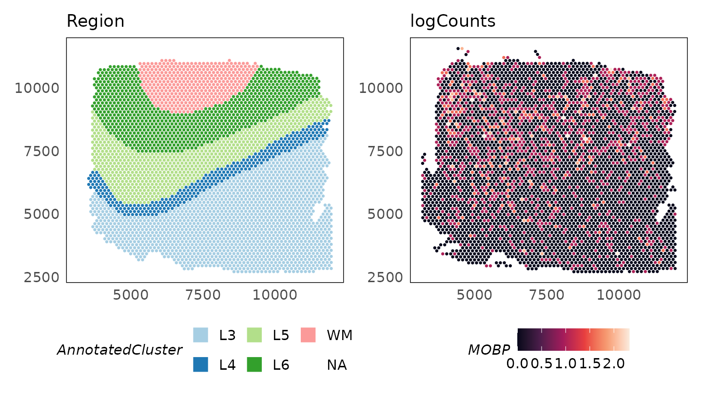

SpaNorm: Spatially aware library size normalisation
Dharmesh D. Bhuva and Agus Salim
9 February 2025
Source:vignettes/SpaNorm.Rmd
SpaNorm.RmdAbstract
This package implements the spatially aware library size normalisation algorithm, SpaNorm. SpaNorm normalises out library size effects while retaining biology through the modelling of smooth functions for each effect. Normalisation is performed in a gene- and cell-/spot- specific manner, yielding library size adjusted data.
SpaNorm
SpaNorm is a spatially aware library size normalisation method that removes library size effects, while retaining biology. Library sizes need to be removed from molecular datasets to allow comparisons across observations, in this case, across space. Bhuva et al. (Bhuva et al. 2024) and Atta et al. (Atta et al. 2024) have shown that standard single-cell inspired library size normalisation approaches are not appropriate for spatial molecular datasets as they often remove biological signals while doing so. This is because library size confounds biology in spatial molecular data.
SpaNorm uses a unique approach to spatially constraint modelling approach to model gene expression (e.g., counts) and remove library size effects, while retaining biology. It achieves this through three key innovations:
- Optmial decomposition of spatial variation into spatially smooth library size associated (technical) and library size independent (biology) variation using generalized linear models (GLMs).
- Computing spatially smooth functions (using thin plate splines) to represent the gene- and location-/cell-/spot- specific size factors.
- Adjustment of data using percentile adjusted counts (PAC) (Salim et al. 2022), as well as other adjustment approaches (e.g., Pearson).
The SpaNorm package can be installed as follows:
if (!requireNamespace("BiocManager", quietly = TRUE))
install.packages("BiocManager")
# release version
BiocManager::install("SpaNorm")
# development version from GitHub
BiocManager::install("bhuvad/SpaNorm")Load count data
We begin by loading some example 10x Visium data profiling the
dorsolateral prefrontal cortex (DLPFC) of the human brain. The data has
~4,000 spots and covers genome-wide measurements. The example data here
is filtered to remove lowly expressed genes (using
filterGenes(HumanDLPFC, prop = 0.1)). This filtering
retains genes that are expressed in at least 10% of cells.
library(SpaNorm)
library(SpatialExperiment)
library(ggplot2)
# load sample data
data(HumanDLPFC)
# change gene IDs to gene names
rownames(HumanDLPFC) = rowData(HumanDLPFC)$gene_name
HumanDLPFC
#> class: SpatialExperiment
#> dim: 5076 4015
#> metadata(0):
#> assays(1): counts
#> rownames(5076): NOC2L HES4 ... MT-CYB AC007325.4
#> rowData names(2): gene_name gene_biotype
#> colnames(4015): AAACAAGTATCTCCCA-1 AAACACCAATAACTGC-1 ...
#> TTGTTTCCATACAACT-1 TTGTTTGTGTAAATTC-1
#> colData names(3): cell_count sample_id AnnotatedCluster
#> reducedDimNames(0):
#> mainExpName: NULL
#> altExpNames(0):
#> spatialCoords names(2) : pxl_col_in_fullres pxl_row_in_fullres
#> imgData names(4): sample_id image_id data scaleFactor
# plot regions
p_region = plotSpatial(HumanDLPFC, colour = AnnotatedCluster, size = 0.5) +
scale_colour_brewer(palette = "Paired", guide = guide_legend(override.aes = list(shape = 15, size = 5))) +
ggtitle("Region")
p_regionThe filterGenes function returns a logical vector
indicating which genes should be kept.
# filter genes expressed in 20% of spots
keep = filterGenes(HumanDLPFC, 0.2)
table(keep)
#> keep
#> FALSE TRUE
#> 2568 2508
# subset genes
HumanDLPFC = HumanDLPFC[keep, ]The log-transformed raw counts are visualised below for the gene MOBP which is a marker of oligodendrocytes enriched in the white matter (WM) (Maynard et al. 2021). Despite being a marker of this region, we see that it is in fact absent from the white matter region.
logcounts(HumanDLPFC) = log2(counts(HumanDLPFC) + 1)
p_counts = plotSpatial(
HumanDLPFC,
colour = MOBP,
what = "expression",
assay = "logcounts",
size = 0.5
) +
scale_colour_viridis_c(option = "F") +
ggtitle("logCounts")
p_region + p_counts
Normalise count data
SpaNorm normalises data in two steps: (1) fitting the SpaNorm model
of library sizes; (2) adjusting data using the fit model. A single call
to the SpaNorm() function is enough to run these two steps.
To speed up computation, the model is fit using a smaller proportion of
spots/cells (default is 0.25). The can be modified using the
sample.p parameter.
set.seed(36)
HumanDLPFC = SpaNorm(HumanDLPFC)
#> (1/2) Fitting SpaNorm model
#> 1004 cells/spots sampled to fit model
#> iter: 1, estimating gene-wise dispersion
#> iter: 1, log-likelihood: -3185253.033796
#> iter: 1, fitting NB model
#> iter: 1, iter: 1, log-likelihood: -3185253.033796
#> iter: 1, iter: 2, log-likelihood: -2567793.267240
#> iter: 1, iter: 3, log-likelihood: -2450249.643552
#> iter: 1, iter: 4, log-likelihood: -2414033.201817
#> iter: 1, iter: 5, log-likelihood: -2398027.810891
#> iter: 1, iter: 6, log-likelihood: -2392561.924421
#> iter: 1, iter: 7, log-likelihood: -2390638.768170
#> iter: 1, iter: 8, log-likelihood: -2389892.874670
#> iter: 1, iter: 9, log-likelihood: -2389530.867843
#> iter: 1, iter: 10, log-likelihood: -2389383.012576 (converged)
#> iter: 2, estimating gene-wise dispersion
#> iter: 2, log-likelihood: -2384794.935592
#> iter: 2, fitting NB model
#> iter: 2, iter: 1, log-likelihood: -2384794.935592
#> iter: 2, iter: 2, log-likelihood: -2383118.209922
#> iter: 2, iter: 2, log-likelihood: -2383118.209922
#> iter: 2, iter: 2, log-likelihood: -2383118.209922
#> iter: 2, iter: 3, log-likelihood: -2383118.209922 (converged)
#> iter: 3, estimating gene-wise dispersion
#> iter: 3, log-likelihood: -2383101.131211
#> iter: 3, fitting NB model
#> iter: 3, iter: 1, log-likelihood: -2383101.131211
#> iter: 3, iter: 2, log-likelihood: -2383083.477463
#> iter: 3, iter: 3, log-likelihood: -2383049.505902 (converged)
#> iter: 4, log-likelihood: -2383049.505902 (converged)
#> (2/2) Normalising data
HumanDLPFC
#> class: SpatialExperiment
#> dim: 2508 4015
#> metadata(1): SpaNorm
#> assays(2): counts logcounts
#> rownames(2508): ISG15 SDF4 ... MT-ND6 MT-CYB
#> rowData names(2): gene_name gene_biotype
#> colnames(4015): AAACAAGTATCTCCCA-1 AAACACCAATAACTGC-1 ...
#> TTGTTTCCATACAACT-1 TTGTTTGTGTAAATTC-1
#> colData names(3): cell_count sample_id AnnotatedCluster
#> reducedDimNames(0):
#> mainExpName: NULL
#> altExpNames(0):
#> spatialCoords names(2) : pxl_col_in_fullres pxl_row_in_fullres
#> imgData names(4): sample_id image_id data scaleFactorThe above output (which can be switched off by setting
verbose = FALSE), shows the two steps of normalisation. In
the model fitting step, 1004 cells/spots are used to fit the negative
binomial (NB) model. Subsequent output shows that this fit is performed
by alternating between estimation of the dispersion parameter and
estimation of the NB parameters by fixing the dispersion. The output
also shows that each intermediate fit converges, and so does the final
fit. The accuracy of the fit can be controlled by modifying the
tolerance parameter tol (default 1e-4).
Next, data is adjusted using the fit model. The following approaches are implemented for count data:
-
adj.method = "logpac"(default) - percentile adjusted counts (PAC) which estimates the count for each gene at each location/spot/cell using a model that does not contain unwanted effects such as the library size. -
adj.method = "person"- Pearson residuals from factoring out unwanted effects. -
adj.method = "meanbio"- the mean of each gene at each location estimated from the biological component of the model. -
adj.method = "medbio"- the median of each gene at each location estimated from the biological component of the model.
These data are stored in the logcounts assay of the
SpatialExperiment object. After normalisation, we see that MOBP is
enriched in the white matter.
p_logpac = plotSpatial(
HumanDLPFC,
colour = MOBP,
what = "expression",
assay = "logcounts",
size = 0.5
) +
scale_colour_viridis_c(option = "F") +
ggtitle("logPAC")
p_region + p_logpac
Computing alternative adjustments using a precomputed SpaNorm fit
As no appropriate slot exists for storing model parameters, we currently save them in the metadata slot with the name “SpaNorm”. This also means that subsetting features (i.e., genes) or observations (i.e., cells/spots/loci) does not subset the model. In such an instance, the SpaNorm function will realise that the model no longer matches the data and re-estimates when called. If instead the model is valid for the data, the existing fit is extracted and reused.
The fit can be manually retrieved as below for users wishing to reuse
the model outside the SpaNorm framework. Otherwise, calling
SpaNorm() on an object containing the fit will
automatically use it.
# manually retrieve model
fit.spanorm = metadata(HumanDLPFC)$SpaNorm
fit.spanorm
#> SpaNormFit
#> Data: 2508 genes, 4015 cells/spots
#> Gene model: nb
#> Degrees of freedom for TPS (y,x): Biology (6,6), LS (6,6)
#> Spots/cells sampled: 25%
#> Regularisation parameter: 1e-04
#> Batch: NULL
#> log-likelihood (per-iteration): num [1:3] -2389383 -2383118 -2383050
#> W: num [1:4015, 1:73] 0.2645 0.4736 0.0547 -0.1756 0.6039 ...
#> W: - attr(*, "dimnames")=List of 2
#> W: ..$ : chr [1:4015] "1" "2" "3" "4" ...
#> W: ..$ : chr [1:73] "logLS" "bs.xy1" "bs.xy2" "bs.xy3" ...
#> alpha: num [1:2508, 1:73] 1.01 1.01 1.01 1.01 1.01 ...
#> gmean: num [1:2508] -1.249 -1.174 -1.266 -1.436 -0.386 ...
#> psi: num [1:2508] 9.77e-05 9.77e-05 9.77e-05 9.77e-05 1.52e-02 ...
#> wtype: Factor w/ 3 levels "batch","biology",..: 3 2 2 2 2 2 2 2 2 2 ...
#> sampling: all (4015), glm (1004), dispersion (500)When a valid fit exists in the object, only the adjustment step is
performed. The model is recomputed if overwrite = TRUE or
any of the following parameters change: degrees of freedom
(df.tps), penalty parameters(lambda.a), object
dimensions, or batch specification. Alternative adjustments
can be computed as below and stored to the logcounts
assay.
# Pearson residuals
HumanDLPFC = SpaNorm(HumanDLPFC, adj.method = "pearson")
p_pearson = plotSpatial(
HumanDLPFC,
colour = MOBP,
what = "expression",
assay = "logcounts",
size = 0.5
) +
scale_colour_viridis_c(option = "F") +
ggtitle("Pearson")
# meanbio residuals
HumanDLPFC = SpaNorm(HumanDLPFC, adj.method = "meanbio")
p_meanbio = plotSpatial(
HumanDLPFC,
colour = MOBP,
what = "expression",
assay = "logcounts",
size = 0.5
) +
scale_colour_viridis_c(option = "F") +
ggtitle("Mean biology")
# meanbio residuals
HumanDLPFC = SpaNorm(HumanDLPFC, adj.method = "medbio")
p_medbio = plotSpatial(
HumanDLPFC,
colour = MOBP,
what = "expression",
assay = "logcounts",
size = 0.5
) +
scale_colour_viridis_c(option = "F") +
ggtitle("Median biology")
p_region + p_counts + p_logpac + p_pearson + p_meanbio + p_medbio + plot_layout(ncol = 3)The mean biology adjustment shows a significant enrichment of the MOBP gene in the white matter. As the overall counts of this gene are low in this sample, other methods show less discriminative power.
Varying model complexity
The complexity of the spatial smoothing function is determined by the
df.tps parameter where larger values result in more
complicated functions (default 6).
# df.tps = 2
HumanDLPFC_df2 = SpaNorm(HumanDLPFC, df.tps = 2)
p_logpac_2 = plotSpatial(
HumanDLPFC,
colour = MOBP,
what = "expression",
assay = "logcounts",
size = 0.5
) +
scale_colour_viridis_c(option = "F") +
ggtitle("logPAC (df.tps = 2)")
# df.tps = 6 (default)
p_logpac_6 = p_logpac +
ggtitle("logPAC (df.tps = 6)")
p_logpac_2 + p_logpac_6
Enhancing signal
As the counts for the MOBP gene are very low, we see artifacts in the adjusted counts. As we have a model for the genes, we can increase the signal by adjusting all means by a constant factor. Applying a scale factor of 4 shows how the adjusted data are more continuous, with significant enrichment in the white matter.
# scale.factor = 1 (default)
HumanDLPFC = SpaNorm(HumanDLPFC, scale.factor = 1)
p_logpac_sf1 = plotSpatial(
HumanDLPFC,
colour = MOBP,
what = "expression",
assay = "logcounts",
size = 0.5
) +
scale_colour_viridis_c(option = "F") +
ggtitle("logPAC (scale.factor = 1)")
# scale.factor = 4
HumanDLPFC = SpaNorm(HumanDLPFC, scale.factor = 4)
p_logpac_sf4 = plotSpatial(
HumanDLPFC,
colour = MOBP,
what = "expression",
assay = "logcounts",
size = 0.5
) +
scale_colour_viridis_c(option = "F") +
ggtitle("logPAC (scale.factor = 4)")
p_logpac_sf1 + p_logpac_sf4 + plot_layout(ncol = 2)
Exploring learnt functions
The plotCovariate() function can be used to explore the
learnt functions. We could study what the model has learnt about the
biology and library size effects of the MOBP gene.
p1 = plotCovariate(HumanDLPFC, colour = MOBP, covariate = "biology") +
scale_colour_viridis_c(option = "F") +
ggtitle("Biology")
p2 = plotCovariate(HumanDLPFC, colour = MOBP, covariate = "ls") +
scale_colour_viridis_c(option = "F") +
ggtitle("Library size effect")
p1 + p2
Identifying spatially variable genes
The SpaNormSVG() function can be used to identify
spatially variable genes (SVGs) in the data. This function fits a nested
model without the biological function of the form:
where is the mean of gene at location , is the log-mean of gene , is a smooth function of the spatial coordinates and representing the library size effect, and is the log-mean of the library size.
The SpaNormSVG() function fits this model and then uses
an F-test to identify spatially variable genes (SVGs).
HumanDLPFC = SpaNormSVG(HumanDLPFC)
HumanDLPFC
#> class: SpatialExperiment
#> dim: 2508 4015
#> metadata(1): SpaNorm
#> assays(2): counts logcounts
#> rownames(2508): ISG15 SDF4 ... MT-ND6 MT-CYB
#> rowData names(5): gene_name gene_biotype svg.F svg.p svg.fdr
#> colnames(4015): AAACAAGTATCTCCCA-1 AAACACCAATAACTGC-1 ...
#> TTGTTTCCATACAACT-1 TTGTTTGTGTAAATTC-1
#> colData names(3): cell_count sample_id AnnotatedCluster
#> reducedDimNames(0):
#> mainExpName: NULL
#> altExpNames(0):
#> spatialCoords names(2) : pxl_col_in_fullres pxl_row_in_fullres
#> imgData names(4): sample_id image_id data scaleFactorThe topSVGs() function can be used to retrieve the top
spatially variable genes (SVGs) at a given false discovery rate (FDR).
These are stored in the rowData slot of the
SpatialExperiment object.
svgs = topSVGs(HumanDLPFC, n = 10)
svgs
#> svg.F svg.p svg.fdr gene_name gene_biotype
#> SNAP25 55.12275 2.545221e-316 6.383415e-313 SNAP25 protein_coding
#> ITM2B 42.26465 4.588429e-248 5.753890e-245 ITM2B protein_coding
#> NEFL 38.63761 7.667892e-228 6.410358e-225 NEFL protein_coding
#> S100A11 34.78994 6.804583e-206 4.266474e-203 S100A11 protein_coding
#> MBP 25.55204 4.827547e-151 2.421497e-148 MBP protein_coding
#> STMN2 24.87049 7.123569e-147 2.977652e-144 STMN2 protein_coding
#> SAA1 22.60034 7.224814e-133 2.588548e-130 SAA1 protein_coding
#> SCGB1D2 22.21822 1.715386e-130 5.377736e-128 SCGB1D2 protein_coding
#> HPCAL1 21.93901 9.404551e-129 2.620735e-126 HPCAL1 protein_coding
#> TMSB10 21.20707 3.505727e-124 8.792363e-122 TMSB10 protein_codingWe can visualise the spatially variable genes using the
plotSpatial() function.
lapply(svgs$gene_name[1:9], function(g) {
plotSpatial(HumanDLPFC, colour = !!sym(g), what = "expression", assay = "logcounts", size = 0.5) +
scale_colour_viridis_c(option = "F") +
ggtitle(g) +
theme(legend.position = "bottom")
}) |>
wrap_plots(ncol = 3)Session information
sessionInfo()
#> R version 4.4.2 (2024-10-31)
#> Platform: x86_64-pc-linux-gnu
#> Running under: Ubuntu 24.04.1 LTS
#>
#> Matrix products: default
#> BLAS: /usr/lib/x86_64-linux-gnu/openblas-pthread/libblas.so.3
#> LAPACK: /usr/lib/x86_64-linux-gnu/openblas-pthread/libopenblasp-r0.3.26.so; LAPACK version 3.12.0
#>
#> locale:
#> [1] LC_CTYPE=C.UTF-8 LC_NUMERIC=C LC_TIME=C.UTF-8
#> [4] LC_COLLATE=C.UTF-8 LC_MONETARY=C.UTF-8 LC_MESSAGES=C.UTF-8
#> [7] LC_PAPER=C.UTF-8 LC_NAME=C LC_ADDRESS=C
#> [10] LC_TELEPHONE=C LC_MEASUREMENT=C.UTF-8 LC_IDENTIFICATION=C
#>
#> time zone: UTC
#> tzcode source: system (glibc)
#>
#> attached base packages:
#> [1] stats4 stats graphics grDevices utils datasets methods
#> [8] base
#>
#> other attached packages:
#> [1] SpatialExperiment_1.16.0 SingleCellExperiment_1.28.1
#> [3] SummarizedExperiment_1.36.0 Biobase_2.66.0
#> [5] GenomicRanges_1.58.0 GenomeInfoDb_1.42.3
#> [7] IRanges_2.40.1 S4Vectors_0.44.0
#> [9] BiocGenerics_0.52.0 MatrixGenerics_1.18.1
#> [11] matrixStats_1.5.0 patchwork_1.3.0
#> [13] ggplot2_3.5.1 SpaNorm_1.1.2
#>
#> loaded via a namespace (and not attached):
#> [1] tidyselect_1.2.1 viridisLite_0.4.2 dplyr_1.1.4
#> [4] farver_2.1.2 fastmap_1.2.0 bluster_1.16.0
#> [7] digest_0.6.37 rsvd_1.0.5 lifecycle_1.0.4
#> [10] cluster_2.1.6 statmod_1.5.0 magrittr_2.0.3
#> [13] compiler_4.4.2 rlang_1.1.5 sass_0.4.9
#> [16] tools_4.4.2 igraph_2.1.4 yaml_2.3.10
#> [19] knitr_1.49 S4Arrays_1.6.0 labeling_0.4.3
#> [22] dqrng_0.4.1 htmlwidgets_1.6.4 DelayedArray_0.32.0
#> [25] RColorBrewer_1.1-3 abind_1.4-8 BiocParallel_1.40.0
#> [28] withr_3.0.2 desc_1.4.3 grid_4.4.2
#> [31] beachmat_2.22.0 colorspace_2.1-1 edgeR_4.4.2
#> [34] scales_1.3.0 cli_3.6.3 rmarkdown_2.29
#> [37] crayon_1.5.3 ragg_1.3.3 generics_0.1.3
#> [40] metapod_1.14.0 httr_1.4.7 rjson_0.2.23
#> [43] scuttle_1.16.0 cachem_1.1.0 zlibbioc_1.52.0
#> [46] splines_4.4.2 parallel_4.4.2 BiocManager_1.30.25
#> [49] XVector_0.46.0 vctrs_0.6.5 Matrix_1.7-1
#> [52] jsonlite_1.8.9 BiocSingular_1.22.0 BiocNeighbors_2.0.1
#> [55] irlba_2.3.5.1 systemfonts_1.2.1 magick_2.8.5
#> [58] locfit_1.5-9.11 limma_3.62.2 jquerylib_0.1.4
#> [61] glue_1.8.0 pkgdown_2.1.1 codetools_0.2-20
#> [64] gtable_0.3.6 UCSC.utils_1.2.0 ScaledMatrix_1.14.0
#> [67] munsell_0.5.1 tibble_3.2.1 pillar_1.10.1
#> [70] htmltools_0.5.8.1 GenomeInfoDbData_1.2.13 R6_2.5.1
#> [73] textshaping_1.0.0 evaluate_1.0.3 lattice_0.22-6
#> [76] BiocStyle_2.34.0 scran_1.34.0 bslib_0.9.0
#> [79] Rcpp_1.0.14 SparseArray_1.6.1 xfun_0.50
#> [82] fs_1.6.5 prettydoc_0.4.1 pkgconfig_2.0.3